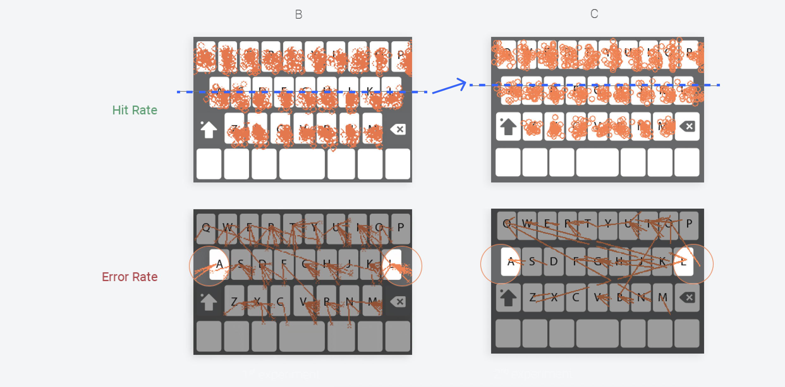

Copyright ©. All Rights Reserved.
Loading...
The keyboard is an essential part of any smartphone experience. However, the ordinary and third-party keyboards on smartphones are generally flawed. When I was working at Foxconn, we discovered that the third-party keyboard was not as accurate as we had hoped, and clients were not satisfied. So we decided to investigate the problem and make suggestions for improvement. We advised the vendor based on the experiment’s findings and helped them integrate the improvement into the virtual keypad, which not only improved accuracy by 10% but also led to the acquisition of a patent.
There were typing interfaces, which were each designed with different layouts and touch areas. Twenty-four participants typed an alphabet letter randomly shown on their screen. Each subject typed a total of seventy-eight letters in each experiment.
We analyzed several virtual keypads from Android and iOS platforms and discovered that the individual touchable area and key dimension might be the most important factors in improving accuracy. We began to construct by building the hypothesis from the touchable area.
A larger touchable area would give the user more space while typing the keypad. More room for users, thus allowing users to touch accuracy.
PredictionIf the text printing is moved upward and the key’s height is decreased, then users will shift downward and concentrate on the proper place.Test
{···} - Variable – touchable area
We created two prototypes and put them into the programs, one with a touchable area that was the same size as a single key and the other significantly bigger. The testing prompts an English letter of the alphabet each time, and the user has to enter in accordance with the English letter prompted, with the next English letter appearing when the input is complete. Each test program has 78 English letters (26 English letters x3).
We didn’t detect any improvement from group B in the initial round of testing, although we did discover some trends.
Because of the user’s perspective, when they are using a virtual keypad, they tend to press the low position of the key to read the letter.
If the text printing is moved upward and the key’s height is decreased, then users will shift downward and concentrate on the proper place.Test
{···} - Variable
letter placement
touchable area
extend the touch area of two end
The second experiment validated our assumptions, raising the accuracy by 8%. However, even though decreasing the height improves accuracy, it might cause the user to feel uncomfortable when using it.
The user’s point of view affects the touch deviation of position.
Because of the printing location, users tend to press the lower and lower-right area
Utilizing the two-end area as a touchable area to increase the accuracy rate
I’m afraid to press the key because the vertical dimension is too small.
In the second experiment, the height of the key is too short, and the user feels uneasy to use the keyboard, so the increasing height of the key will help to fix this issue.
PredictionIf each key’s height increases, then users feel more confident in using it.
{···} Variable – the height of the key
The third trial confirmed our hypothesis, which was that lowering the height of the key was beneficial. It boosts users’ confidence when using the keyboard and improves accuracy by 9.79%.
Created the presentation to share the outcome and recommendations with the teams and vendors.
Even though the hit-rate accuracy improved by 10%, as a result, it was just for the right-hand user. We believe that we can use an accelerometer to detect input and change the display of each key on the virtual keyboard to offer an appropriate contact area on the virtual keyboard.
Copyright ©. All Rights Reserved.